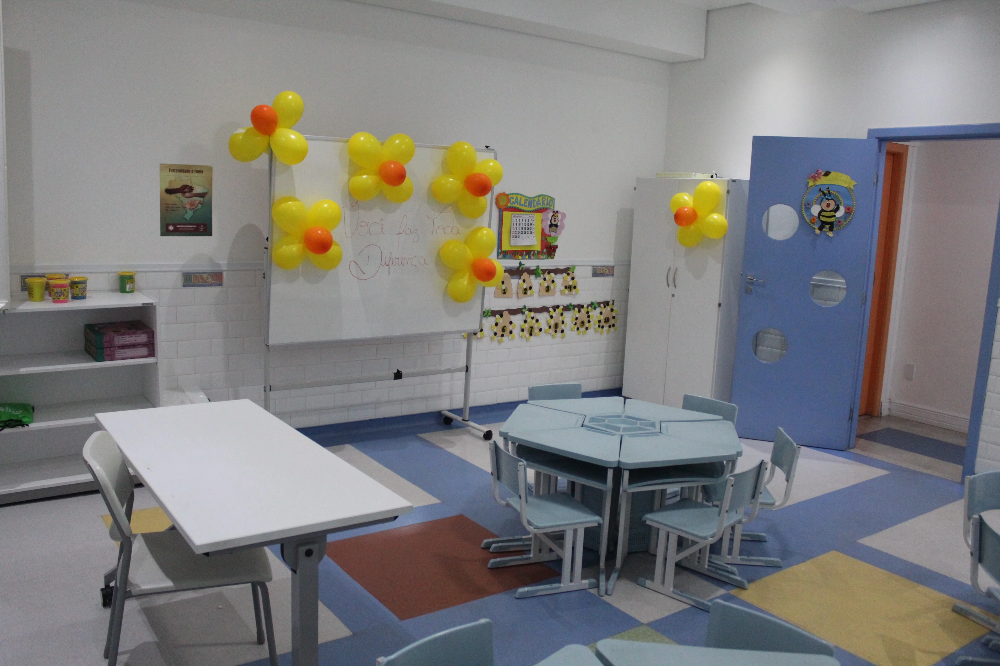
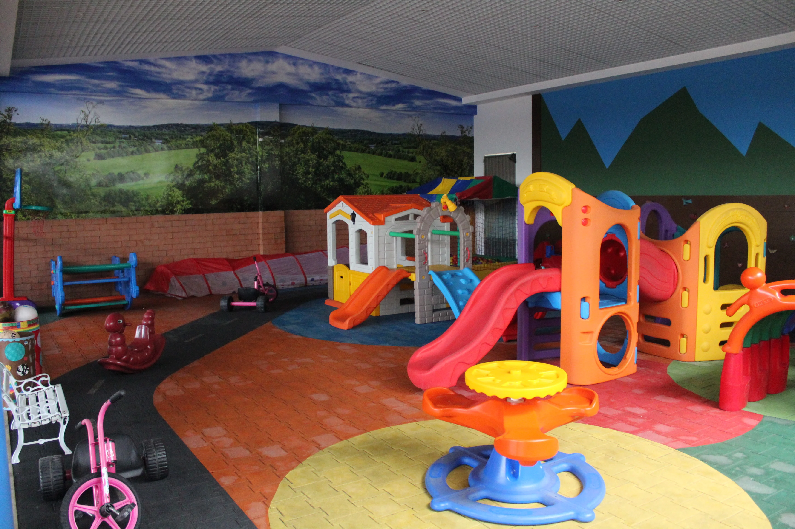
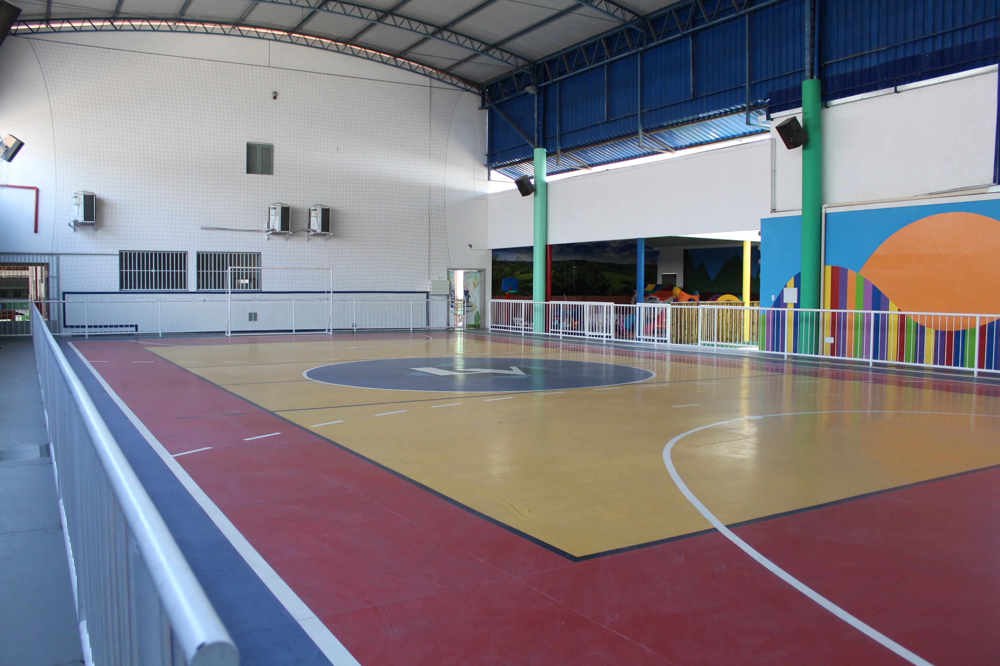
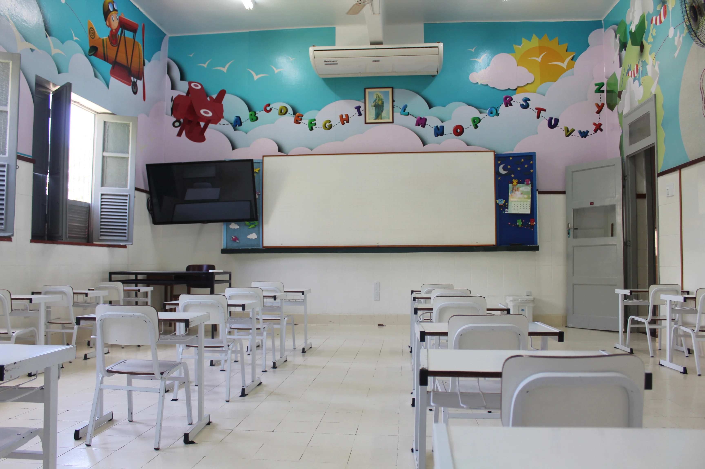
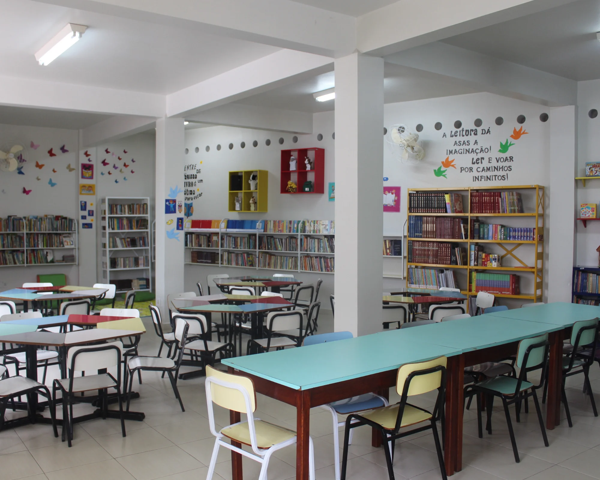
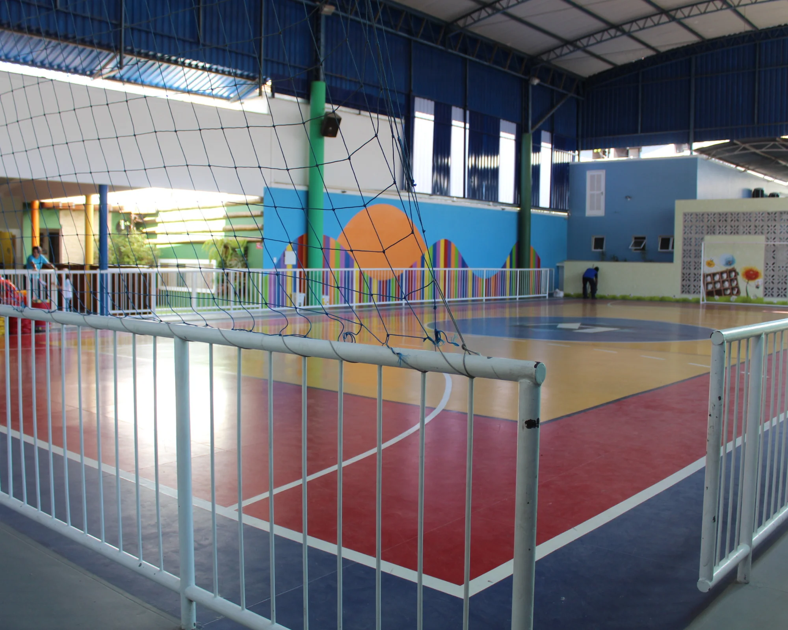
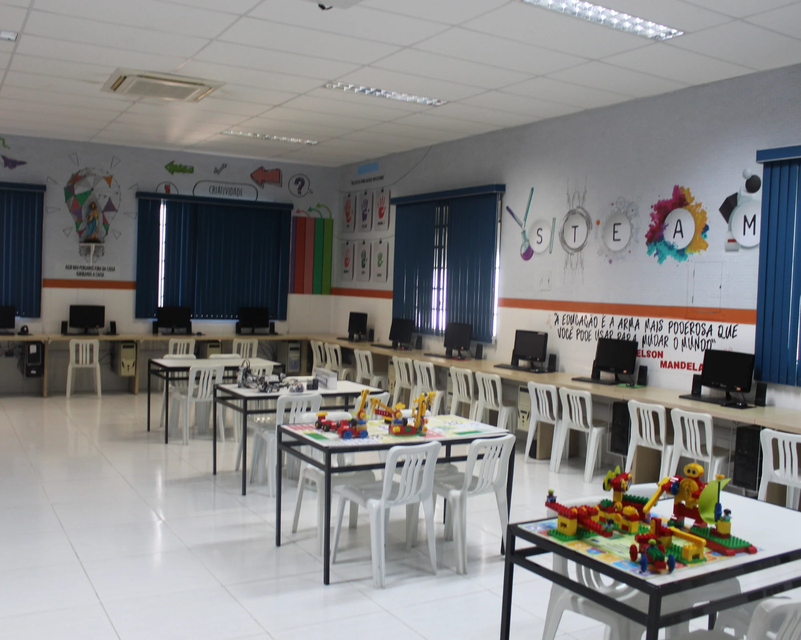
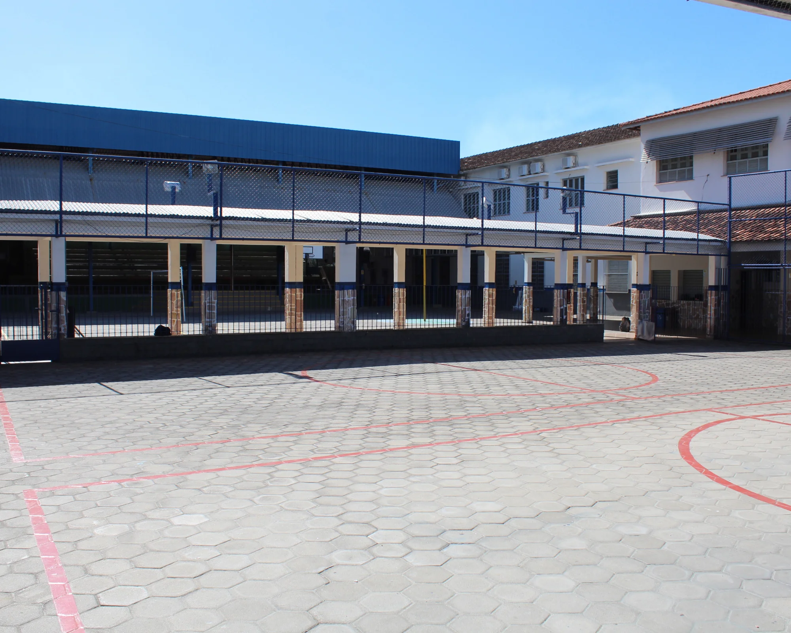

Conheça um pouco mais dos nossos cursos
Na Educação Infantil a aprendizagem e o desenvolvimento das crianças têm como principais eixos as interações e a brincadeira, assegurando-lhes os direitos de conviver, brincar, participar, explorar, expressar-se e conhecer-se.
A criança é vista e respeitada por ser criança, suas linguagens, suas culturas e seu protagonismo.
A proposta educativa utiliza-se dos campos de experiência - o eu, o outro, o nós; Corpo, gestos e movimentos; Traços, sons, cores e formas; Escuta, fala, pensamento e imaginação; Espaço, tempo, quantidades, relações e transformações - e as competências gerais da Base Nacional Comum Curricular como referência para o Planejamento, pois a concepção de criança como ser que observa, questiona, levanta hipóteses, conclui, faz julgamentos e assimila valores e que constrói conhecimentos e se apropria do conhecimento sistematizado por meio da ação e nas interações com o mundo físico e social reitera a importância e necessidade de imprimir intencionalidade educativa às práticas pedagógicas.
O material didático exclusivo da Editara Edebê Brasil GIROLHAR para as turmas do Infantil I, II e III, disponibiliza Kits da Coleção compostos por 2 livros didáticos (semestral), 2 blocos de material de apoio (semestral), 2 livros de literatura físicos + 1 digital, pasta da família, sacola Girovai Girovem, fichas da família e kit para espiar que garantem a apropriação dos conhecimentos significativos por meio das experiências e uma educação para o consumo consciente, pensamento lógico e computacional, trabalho colaborativo, formação de repertório estético e cultural, construção de habilidades de comunicação e formação artística.



Em nosso ambiente educativo, consideramos o currículo como um modo de mediação pedagógica e cultural a serviço das pessoas que partilham a educação como experiência que promove conhecimento, autonomia e protagonismo. A proposta pedagógica organizada em áreas tem por objetivo reunir conhecimentos que compartilham os mesmos objetos de estudo, facilitando a comunicação e o desenvolvimento de uma prática escolar integradora e crítica.
Consideramos que a integração entre os vários componentes curriculares e as áreas do conhecimento se faça pelas concepções e pressupostos teórico-metodológicos comuns a todas a elas e por meio do desenvolvimento de habilidades escolares comuns que são: a leitura e interpretação de diferentes linguagens; produção de textos em gêneros variados; clareza na exposição de ideias; argumentação coerente; interpretação de fatos e ideias; mobilização de conhecimento e informações; aplicação de conceitos e procedimentos para a resolução de problemas.
O material didático exclusivo da Editara Edebê Brasil a Coleção NAUTAS para as turmas do Ensino Fundamental anos iniciais disponibiliza Kits da Coleção compostos por livros de Língua Portuguesa • Matemática • Geografia • História • Ciências • Ensino Religioso • Ampliando Rotas • Caderno de Robótica • Kits de robótica A coleção Nautas para os anos iniciais do Ensino Fundamental concebe o aluno como um viajante pelo mundo de saberes e conhecimentos, tendo como seus principais pilares a sustentabilidade, BNCC, Sistema Preventivo e a aprendizagem e maker steam.
Tem como principal objetivo instigá-lo a pesquisar, investigar, analisar, explorar e experimentar, de forma interativa e contextualizada, diferentes itinerários para sua formação como um ser integral.



O Ensino fundamental anos finais tem como objetivo dar condição para que os adolescentes sejam agentes na construção do próprio conhecimento. Concepções de ensino e aprendizagem são voltadas para o crescimento do estudante no desenvolvimento de suas mais variadas potencialidades. Nesta perspectiva dá-se vazão à capacidade do estudante em extrapolar o conteúdo e refletir sobre o mesmo, garantindo maior autonomia no seu pensamento sobre os acontecimentos que o envolvem e sobre outros acontecimentos dos mais variados contextos, para torna-lo autoral e autônomo na sua forma de pensar e agir.
Nessa ótica, nossa proposta de educação ativa todas as potencialidades do jovem, das capacidades intelectuais às emotivas, e torna-o capaz de assumir a corresponsabilidade com o seu desenvolvimento, junto aos seus educadores, em suas várias dimensões. A relação do estudante com o conhecimento ocorre em situações concretas, no desejo de que o ensino seja conduzido de forma compatível com uma formação ampla, alicerçada no conhecimento, com intenção e consciência de que, em cada aula de cada componente curricular, desenvolvam-se valores, realizem-se investigações, respeitem-se os contextos e ampliem-se a leitura crítica de cada conteúdo estudado.
Com o novo Material Didático Digital da Editara Edebê Brasil, a Coleção Rotas sinaliza caminhos para alcançar sonhos, a descoberta de novos horizontes. E uma incrível bagagem de conhecimento científico, repertório cultural, inteligência socioemocional e habilidades para vida que se conectam e possibilitam a realização de grandes escolhas.
Possibilita-se a utilização de diferentes fontes de informação e recursos tecnológicos para adquirir e construir conhecimentos, saberes, valores e diferentes linguagens. As propostas pedagógicas e didáticas interdisciplinares possibilitam o diálogo entre os componentes curriculares a fim de colaborar na construção do conhecimento de um ou mais objeto de ensino.


Matriculas Abertas 2025
Garanta sua vaga e venha fazer parte da nossa jornada de aprendizado.
Nosso Aplicativo oficial


Redes sociais do Laura Vicunha